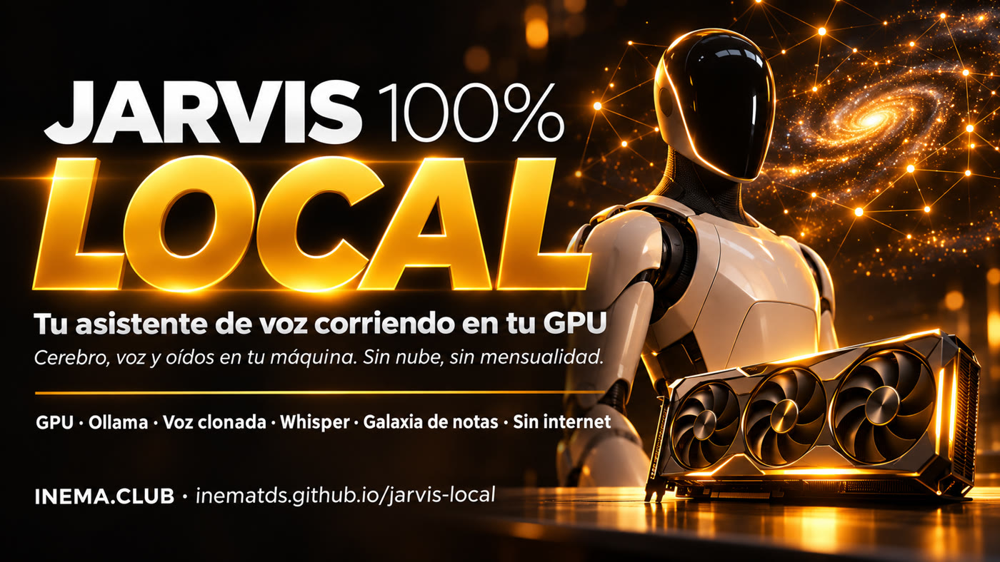
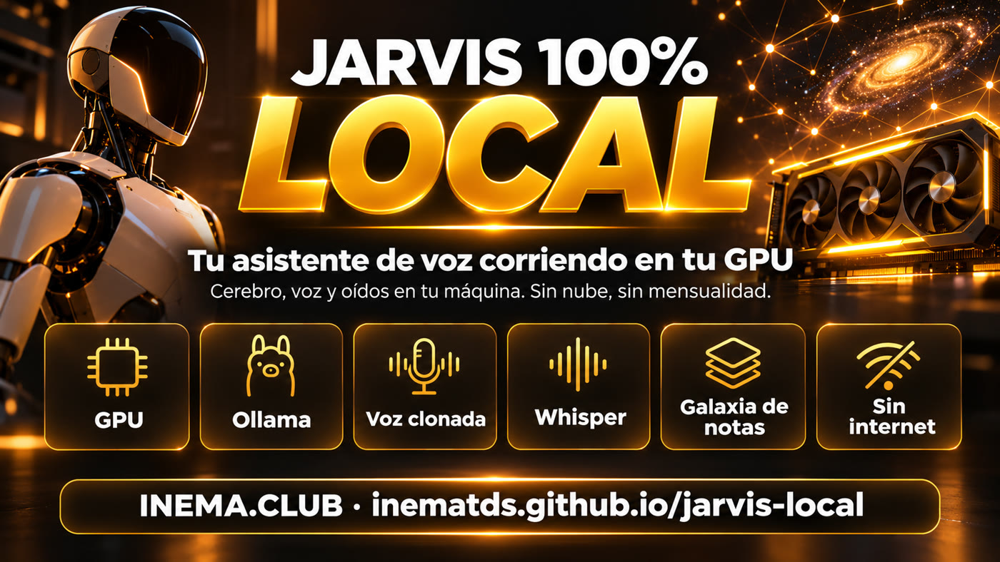
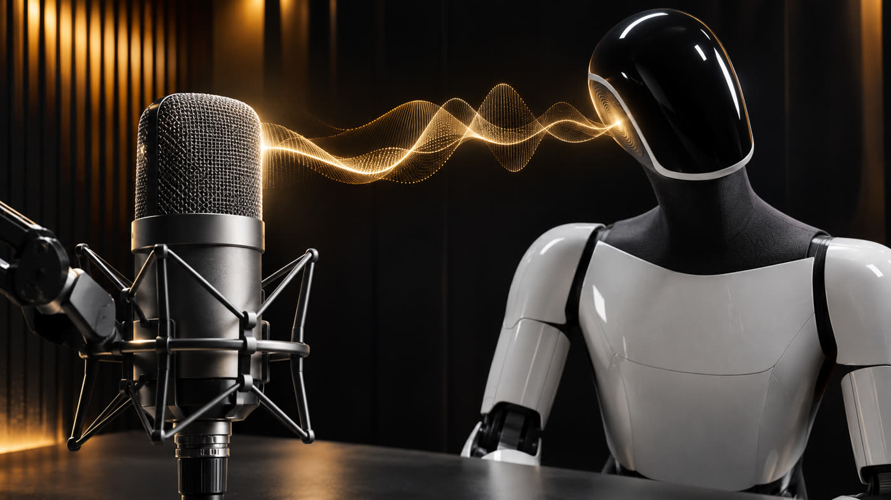
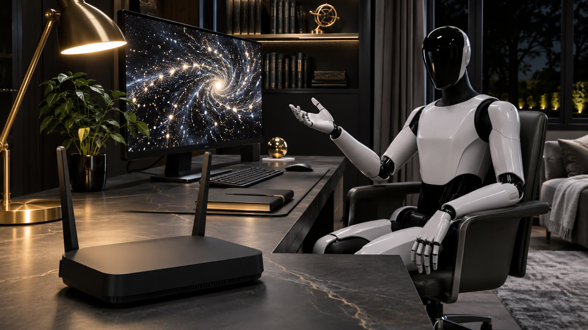

Cerebro, voz clonada y oídos funcionando en tu computadora. Sin mensualidad, sin cuenta de API y sin que nada salga de tu casa.

Jarvis Local es un kit abierto para crear un asistente personal al que llamas por voz («Jarvis, …») y que funciona por completo en tu computadora. Responde a partir de tus propias notas, que se muestran en una galaxia 3D, habla con una voz clonada y agrega cosas nuevas cuando se lo pides. Está pensado para quienes quieren un asistente sin mensualidad y sin enviar el audio a la nube. Necesitas una máquina con GPU (tarjeta NVIDIA, Mac con chip de Apple o mini PC con memoria unificada) y Claude Code o Codex para construirlo una sola vez con los 8 prompts del kit.
El proyecto explicado en pocos minutos.
El kit instala los tres motores gratuitos e incluye los prompts para que Claude Code (o Codex) construya el asistente sobre ellos. Una vez listo, funciona sin esos dos y sin internet.

Ollama ejecuta un modelo de IA abierto (Qwen, Gemma, gpt-oss) en tu tarjeta gráfica y responde a partir de tus notas.
VoiceStudio clona tu voz a partir de 10–20 segundos de grabación. El motor VoxCPM2 habla portugués.
Whisper transcribe lo que dices ahí mismo. Dices «Jarvis» y escucha; dices «detente» y se calla.
El cerebro, la voz y los oídos permanecen en memoria al mismo tiempo, y el cerebro es lo que más ocupa. Lo que decide todo es cuánta memoria puede usar el modelo: la VRAM de la tarjeta NVIDIA o la memoria unificada de la Mac y de las mini PC con IA.
Mac con Apple Silicon (16 GB+, ideal 32 GB)
PC con tarjeta NVIDIA (12 GB+ de VRAM, ideal 16–32 GB)
Mini PC con memoria unificada (AMD Ryzen AI Max+, NVIDIA DGX Spark)
VPS / servidor en la nube sin GPU
Notebook de 8 GB sin tarjeta gráfica
Tarjeta con menos de 12 GB de VRAM (solo conversación sencilla)
Tamaño de descarga de cada modelo (4 bits, biblioteca de Ollama, 04/11/2026). El instalador elige automáticamente hasta gpt-oss:120b; el último de la lista se elige con --modelo. Deja ~30% libre: se estima que la voz y los dos Whisper ocupan unos 4–6 GB más en la misma tarjeta.
También caben: gpt-oss:20b (14 GB, rápido), gemma4:26b-a4b (16–19 GB), llama4:scout (67 GB). Las etiquetas que terminan en -cloud funcionan en la nube de Ollama: el instalador las rechaza. Tabla completa en MODELOS.es.md.
Todo ocurre en tu máquina, en puertos locales. El prompt 07 mide cuánto tarda cada etapa en tu computadora.

Servidor de modelos abiertos en un formato compatible con OpenAI. El mismo código funciona con otro endpoint si cambias tres campos.
Motor de voz local. El asistente fija el motor cada vez que inicia para que ninguna licencia cambie sin aviso.
La galaxia 3D de notas en el navegador, vinculada a 127.0.0.1. Desde ahí hablas y ves de qué nota salió la respuesta.
El nombre del modelo en Ollama, con su tamaño: qwen3.5:9b.
Modelo comprimido para que ocupe menos memoria, con poca pérdida de calidad.
La dirección que recibe las preguntas; aquí, localhost:11434/v1.
La memoria que usa la GPU. En la Mac y las mini PC con IA, es la misma que usa el sistema.
Servidor de archivos en internet. El prompt 08 incorpora las bibliotecas al proyecto.
Biblioteca abierta que dibuja la galaxia 3D de notas en el navegador.
El instalador se encarga de los tres motores y revisa lo demás antes de empezar: si falta algo, muestra el comando para instalarlo.
Tarjeta NVIDIA, Mac con chip de Apple o mini PC con memoria unificada (ver arriba). En NVIDIA, con el driver instalado: nvidia-smi tiene que funcionar.
En Ubuntu/Debian también necesitas python3-venv y sudo para instalar Ollama.
sudo apt install -y python3-venv curl
U otro navegador con acceso al micrófono.
Solo para construirlo con los prompts, una vez.
Una noche para instalar y un fin de semana para construir. Cada paso termina con una prueba.
Clona el repositorio en la computadora donde funcionará el asistente.
git clone https://github.com/inematds/jarvis-local.git cd jarvis-local
Muestra la GPU, la memoria y el modelo que se elegirá, sin instalar nada. Si no hay GPU, se detiene y lo explica.
# Mac o Linux bash instalar/instalar.sh --simular # Windows (PowerShell) powershell -ExecutionPolicy Bypass -File instalar\instalar.ps1 -Simular
El mismo comando, sin la simulación: Ollama + el modelo adecuado para tu memoria, Whisper (faster-whisper o mlx-whisper) y VoiceStudio. Para elegir el modelo manualmente: --modelo qwen3.8:27b.
bash instalar/instalar.sh # Mac o Linux bash instalar/instalar.sh --modelo gemma4:12b # forzar un modelo powershell -ExecutionPolicy Bypass -File instalar\instalar.ps1 # Windows
En tarjetas NVIDIA también instala las bibliotecas CUDA de Whisper (cuBLAS y cuDNN). Al final, guarda en ~/.jarvis-local/minha-maquina.json la etiqueta del cerebro y la versión de Python que usarán los prompts.
En VoiceStudio: Model Catalogue → instala VoxCPM2 (habla portugués, licencia Apache-2.0) y selecciónalo. Luego ve a Profiles → New → Clone con 10–20 s de TU voz, sin música ni eco, y ponle el nombre Jarvis. VoiceStudio es una aplicación con interfaz gráfica; anota la versión que funcionó y no la actualices durante el proyecto. En Linux, ábrelo con ~/.local/bin/VoiceStudio (es un AppImage: Ubuntu 24.04 necesita sudo apt install -y libfuse2t64 y 22.04 libfuse2). En el primer uso descarga su propio motor y tarda.
Comprueba los tres motores y mide la primera respuesta del cerebro en tu máquina.
python3 instalar/verificar.py # ✓ GPU: … ✓ modelo descargado ✓ respondió en X s ✓ VoiceStudio en funcionamiento (ejemplo)
Abre Claude Code (o Codex) en una carpeta vacía y pega los prompts 01 → 08 en orden, uno a la vez, esperando a que cada uno termine y demuestre que funciona. En el prompt 01, completa la etiqueta del cerebro y la versión de Python con los datos de ~/.jarvis-local/minha-maquina.json.
mkdir ~/meu-jarvis && cd ~/meu-jarvis && claude # pega el contenido de prompts/01-galaxia-e-cerebro.md
El prompt 07 crea verificar_tudo.py, que mide el tiempo de escuchar · pensar · hablar en tu máquina. El prompt 08 apaga el Wi-Fi y comprueba que la lista de conexiones externas esté vacía.
python3 verificar_tudo.py # escuchar 0,6 s · pensar 1,9 s · hablar 0,8 s · total 3,3 s (ejemplo) # 14 correctas, 0 fallas, 0 avisos
«Jarvis, ¿qué anoté sobre el cliente X?» · «Jarvis, anota que la reunión cambió al jueves» · «Cambia al modelo grande» · «Todo local».
Cada prompt es una instrucción completa: qué construir, qué reglas debe respetar y cómo demostrar que funciona. Cambia solo lo que está entre corchetes.
«Jarvis» para llamarlo, «detente» para interrumpirlo; el audio no sale de la habitación.
abrir →Un personaje que cabe en un modelo pequeño, con un prompt corto y rápido.
abrir →Local, grande o en la nube (opcional), por voz y con una etiqueta en pantalla.
abrir →Dos ejemplos que ofrece el kit: la respuesta que vuela hasta la nota de la que salió y el asistente que funciona sin internet.

Lo que el kit enseña a hacer bien y qué puedes hacer después.